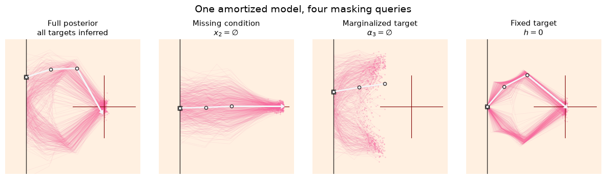

7. Masking#
Masks let one trained inference network answer several related questions. For example, the same model can infer a full posterior, work with an observation whose second coordinate is missing, return a parameter marginal, or condition on a parameter whose value is already known.
This guide develops those cases with the inverse-kinematics benchmark and then covers padding and attention masks. The examples use a DiffusionModel with a DiffusionTransformer, but the same explicit MaskHandler interface is available to FlowMatching and ConsistencyModel.
Important
A mask does not give an ordinarily trained network a new skill after the fact. The masking patterns are included during training, and need to be validated for every kind of query you plan to use.
7.1. Two kinds of masks#
BayesFlow distinguishes two mask families:
Semantic masks change the probabilistic question. They say which target coordinates are inferred, fixed, or marginalized and which condition coordinates were observed.
Structural masks describe tensor structure, such as padding or a custom attention pattern. They route to a summary network or inference subnet but do not, by themselves, redefine the posterior. Masks passed to summary network can, however, also be used to ignore missing values.
Most of this guide concerns semantic masks.
7.2. Semantic masks at a glance#
All semantic masks follow a keep-mask convention: 1 means that a coordinate is active or present, while 0 removes it from its usual role. For a distribution \(p(\boldsymbol\theta \mid \mathbf{x})\):
Argument |
Applies to |
|
|
|---|---|---|---|
|
conditions \(\mathbf{x}\) |
observed and usable |
missing; ignore this condition |
|
targets \(\boldsymbol\theta\) |
present in the requested target |
absent; marginalize this target |
|
targets \(\boldsymbol\theta\) |
infer and update |
hold fixed at |
fixed_target_value is not a mask. It is the complete target-shaped value array used wherever fixed_target_mask is 0.
For ordinary vector data, use shape (num_datasets, num_dimensions). There is no posterior-sample axis: BayesFlow broadcasts each row over num_samples or the corresponding structural dimensions. A shared one-dimensional mask is also accepted in many low-level calls, but keeping the data-batch axis makes examples and batched inference unambiguous.
When no semantic mask is supplied, all conditions are observed and all targets are inferred.
7.2.1. What changes statistically?#
Suppose \(A\) and \(B\) partition the targets and \(O\) and \(M\) partition the observation:
Missing observation:
observed_condition_maskrequests \(p(\boldsymbol\theta\mid\mathbf{x}_O)\). The unavailable \(\mathbf{x}_M\) is not treated as an observation equal to zero; it is excluded as evidence.Target marginal:
infer_target_maskrequests \(p(\boldsymbol\theta_A\mid\mathbf{x})=\int p(\boldsymbol\theta_A,\boldsymbol\theta_B\mid\mathbf{x})\,d\boldsymbol\theta_B\).Arbitrary conditional:
fixed_target_masktogether withfixed_target_valuerequests \(p(\boldsymbol\theta_A\mid\boldsymbol\theta_B=\mathbf{b},\mathbf{x})\).
These cases are easy to mix up.
A missing observation removes information on the conditioning side.
A target marginal removes a variable from the quantity being inferred.
A fixed target instead adds its known value to the conditioning information.
They can be used in tandem.
7.3. The Diffusion Transformer#
The DiffusionTransformer subnet turns every target and condition dimension into its own token. Each token receives an identity embedding and one of three learned state embeddings:
latent - a target currently being inferred,
observed - a fixed target or an available condition,
missing - a marginalized target or unavailable condition.
The transformer derives a directed attention mask from those states. Inferred target tokens can use all present information; fixed target tokens act as context and receive no updates; missing tokens cannot become evidence.
The DiffusionModel, FlowMatching, or ConsistencyModel passes clean targets and projects sampling states and updates. Diffusion time modulates every block through adaptive layer normalization. If an explicit attention mask is also supplied, it is intersected with the semantic mask, so custom attention cannot make a missing token visible again.
Despite its name, this is a subnet architecture, not a separate inference algorithm, and it is not the only component that consumes masks. The outer inference network uses fixed_target_mask to clamp fixed coordinates and exclude their updates, losses, or density terms, while a mask-aware subnet uses infer_target_mask to learn target marginals.
Summary networks and other mask-aware subnets can consume structural masks as described below. What the DiffusionTransformer adds is learned, per-dimension token handling of observed, latent, and missing states. Use subnet="diffusion_transformer" with DiffusionModel, FlowMatching, or ConsistencyModel when you need that separation. A plain MLP receives a flat vector and cannot enforce the same token-level visibility.
7.4. Running example: inverse kinematics#
The benchmark describes a planar robot arm with target vector
and observed endpoint \(\mathbf{x}=(x_1,x_2)\). It is a useful example because we can ask intuitive variants of the same inverse problem: infer all four arm parameters, ignore a broken position sensor, marginalize the final joint angle, or fix the height to a measured value.
The scenarios mirror the inverse-kinematics masking example from the diffusion experiments.
import bayesflow as bf
import numpy as np
seed = 2026
rng = np.random.default_rng(seed)
simulator = bf.simulators.InverseKinematics(rng=rng)
adapter = (
bf.adapters.Adapter()
.to_array()
.rename("parameters", "inference_variables")
.rename("observables", "inference_conditions")
)
# One observed arm endpoint; the leading axis indexes datasets.
observation = {"observables": np.array([[0.0, 1.5]], dtype=np.float32)}
7.5. Train one model for all cases#
A MaskHandler owns mask generation and routing. Its three probabilities augment each training batch with random masking patterns:
fixed_target_probmoves some target coordinates from the inferred set to the clean conditioning set. This teaches arbitrary target conditionals. The automatic generator keeps at least one eligible target inferred in each row.missing_target_probhides some coordinates that would otherwise be fixed. This teaches target marginals. For automatic mask generation, setfixed_target_prob > 0when using it; an explicit training-timefixed_target_maskcan provide the candidates instead.missing_conditions_probhides condition coordinates. This teaches inference from incomplete observations.
The values below are a reasonable illustration.
Increasing
fixed_target_probreduces ordinary full-posterior rows.Increasing
missing_conditions_probreduces complete-observation rows.Finally,
missing_target_probchanges the mix of fixed versus marginalized coordinates only within target queries that already contain fixed coordinates.
DiffusionModel, FlowMatching, and ConsistencyModel accept mask_handler=None, which creates a default MaskHandler() with all three probabilities set to zero. You can pass an explicit configured handler, as below, whenever training should generate random semantic masks. This keeps masking policy separate from the diffusion, flow-matching, or consistency-model configuration. MaskHandler(seed=...) initializes its own local random generator and serializes its seed and masking configuration. It can use the same seed integer as the inference network while retaining separate random state.
inference_network = bf.networks.DiffusionModel(
subnet="diffusion_transformer",
mask_handler=bf.masking.MaskHandler(
fixed_target_prob=0.3,
missing_target_prob=0.3,
missing_conditions_prob=0.3,
seed=seed
),
seed=seed
)
workflow = bf.BasicWorkflow(
simulator=simulator,
adapter=adapter,
inference_network=inference_network,
standardize="inference_conditions"
)
Tip
To use flow matching, replace DiffusionModel with FlowMatching and pass the same kind of configured handler. ConsistencyModel and StableConsistencyModel expose the same argument (and ConsistencyModel additionally requires total_steps). Every inference-time mask keeps the same meaning.
We will train exactly as for an unmasked amortized posterior. Random semantic masks are sampled only during training; the explicit masks in later sections select a query at inference time.
The following is the only expensive cell. The simulation count and epochs are deliberately visible so they can be adjusted for an experiment.
training_data = simulator.sample(50_000)
history = workflow.fit_offline(training_data, epochs=200, batch_size=1024, verbose=0)
7.6. Reference: the full posterior#
With no masks, both endpoint coordinates are observed and all four arm parameters are inferred. The returned array has shape (1, 1000, 4): one dataset, 1000 posterior draws, and four targets.
posterior_full = workflow.sample(
conditions=observation,
num_samples=1_000,
)["parameters"]
7.7. Missing observations#
Suppose \(x_2\) was not recorded. Keep \(x_1\) with a 1 and mark \(x_2\) missing with a 0. The value stored in the masked position is ignored by the transformer, but it should still be a finite placeholder rather than NaN so preprocessing remains well behaved.
This query approximates \(p(h,\alpha_1,\alpha_2,\alpha_3\mid x_1)\), which will usually be broader than the full posterior because it contains less evidence.
condition_observed = np.array([[1.0, 0.0]], dtype=np.float32)
posterior_missing_x2 = workflow.sample(
conditions=observation,
num_samples=1_000,
observed_condition_mask=condition_observed,
)["parameters"]
7.8. Target marginals#
Now keep the complete endpoint but request only \((h, \alpha_1, \alpha_2)\). Setting the \(\alpha_3\) entry of infer_target_mask to 0 tells the model to integrate out the final joint angle. The retained values still define the first two arm segments, so this marginal has a direct visualization.
The returned tensor keeps the original four-coordinate layout. The value in a marginalized coordinate is only an implementation placeholder; it is not a draw from that coordinate’s prior or marginal posterior. Discard masked coordinates explicitly, as the final line does below.
target_present = np.array([[1.0, 1.0, 1.0, 0.0]], dtype=np.float32)
posterior_without_alpha3 = workflow.sample(
conditions=observation,
num_samples=1_000,
infer_target_mask=target_present,
)["parameters"]
two_segment_samples = posterior_without_alpha3[..., :3]
7.9. Fixed targets and arbitrary conditionals#
A fixed target is different from a marginalized target. Here we know that \(h=0\) and want \(p(\alpha_1,\alpha_2,\alpha_3\mid h=0,\mathbf{x})\).
fixed_target_mask uses 0 for the fixed coordinate and 1 for coordinates that remain free. fixed_target_value must have the complete target shape; entries selected by 1 are ignored. At the workflow boundary, supply fixed_target_value in the adapted target coordinates, before workflow standardization.
Our simple adapter only renames, so those are the original parameter units; BayesFlow applies configured workflow standardization internally. During sampling, BayesFlow zeros learned updates for fixed coordinates; stochastic solvers also project their states and noise updates so those coordinates cannot drift.
target_free = np.array([[0.0, 1.0, 1.0, 1.0]], dtype=np.float32)
target_value = np.array([[0.0, 0.0, 0.0, 0.0]], dtype=np.float32)
posterior_given_zero_height = workflow.sample(
conditions=observation,
num_samples=1_000,
fixed_target_mask=target_free,
fixed_target_value=target_value,
)["parameters"]
7.10. Compare the masked samples visually#
The arm geometry makes the four probabilistic questions tangible. Each translucent arm is one posterior draw and the solid arm is a representative draw.
A complete endpoint is drawn as a cross, with one reference line per observed coordinate. The missing-condition panel therefore shows only the line for \(x_1\). The target-marginal panel draws only the first two arm segments because \(\alpha_3\) was integrated out.
import importlib
import sys
from pathlib import Path
import matplotlib.pyplot as plt
example_root = next(
parent
for parent in (Path.cwd(), *Path.cwd().parents)
if (parent / "examples/misc/diffusion/kinematics_helper.py").is_file()
)
if str(example_root) not in sys.path:
sys.path.insert(0, str(example_root))
InverseKinematicsModel = importlib.import_module(
"examples.misc.diffusion.kinematics_helper"
).InverseKinematicsModel
sample_views = [
("Full posterior\nall targets inferred", posterior_full[0], None),
("Missing condition\n" r"$x_2 = \varnothing$", posterior_missing_x2[0], condition_observed[0]),
("Marginalized target\n" r"$\alpha_3 = \varnothing$", two_segment_samples[0], None),
("Fixed target\n$h = 0$", posterior_given_zero_height[0], None),
]
arm_plotter = InverseKinematicsModel(linecolors=["#F768A1"] * 3)
fig, axes = plt.subplots(
1, 4, figsize=(12, 3.4), subplot_kw={"box_aspect": 1}, layout="constrained"
)
for ax, (title, samples, observed_mask) in zip(axes, sample_views, strict=True):
plotted = samples[::2]
center = np.median(plotted, axis=0)
exemplar = np.argmin(np.sum((plotted - center) ** 2, axis=1))
arm_plotter.update_plot_ax(
ax,
plotted,
observation["observables"][0, ::-1],
exemplar=exemplar,
exemplar_color="#F4F5F8",
observed_condition_mask=observed_mask,
)
ax.set_title(title, fontsize=11)
ax.set_facecolor("#FFF0E1")
for spine in ax.spines.values():
spine.set_visible(False)
fig.suptitle("One amortized model, four masking queries", fontsize=14)

7.11. An all-in-one query#
The masks can be combined when they refer to distinct roles. In the next query:
\(h\) is present but fixed to zero,
\(\alpha_1\) and \(\alpha_2\) are inferred,
\(\alpha_3\) is marginalized,
\(x_1\) is observed and \(x_2\) is missing.
In probability notation, the useful output approximates \(p(\alpha_1,\alpha_2\mid h=0,x_1)\) with \(\alpha_3\) integrated out.
combined = workflow.sample(
conditions=observation,
num_samples=1_000,
observed_condition_mask=np.array([[1.0, 0.0]], dtype=np.float32),
infer_target_mask=np.array([[1.0, 1.0, 1.0, 0.0]], dtype=np.float32),
fixed_target_mask=np.array([[0.0, 1.0, 1.0, 1.0]], dtype=np.float32),
fixed_target_value=np.zeros((1, 4), dtype=np.float32),
)["parameters"]
alpha_1_and_2 = combined[..., 1:3] # discard the marginalized alpha_3 slot
7.12. The same masks apply to densities#
For inference networks that implement log_prob, semantic masks have the same meaning during density evaluation. For example, the call below evaluates the learned marginal density of \((h, \alpha_1, \alpha_2)\) at eight simulated points, using one Hutchinson probe for the divergence estimate. Fixed target coordinates are similarly excluded from the reported conditional density.
evaluation_data = simulator.sample(8)
partial_arm_log_prob = workflow.log_prob(
evaluation_data,
infer_target_mask=target_present,
hutchinson_steps=1,
)
7.13. Structural masks: padding and attention#
Structural masks solve a different problem. They describe which positions in a padded set or sequence are valid, or which tokens may attend to one another. They use the same keep convention: True/1 means valid or allowed and False/0 means padded or forbidden.
Workflow/adapted-data key |
Routed to |
Typical use |
|---|---|---|
|
summary network’s |
mark valid entries in padded summary data |
|
summary network’s |
control attention among summary tokens |
|
inference subnet’s |
mark valid entries in structured inference data |
|
inference subnet’s |
control inference-subnet attention |
The four names in the table are workflow-boundary names. BayesFlow renames them to the canonical mask or attention_mask argument before calling the receiving network. A receiver must explicitly declare the corresponding argument in its call signature; BayesFlow raises when a structural mask would otherwise be silently ignored. Coupling layers, for example, do not pass structural masks to their internal subnets.
A padding mask normally has shape (batch, sequence_length). An attention mask describes allowed query-key pairs; its exact broadcastable shape depends on the receiver. For example, SetTransformer and FusionTransformer accept attention patterns broadcastable to multi-head attention, while TimeSeriesTransformer accepts a (batch, sequence_length) key mask. Check the selected network’s call documentation before constructing a custom pattern.
7.13.1. Masks for a summary network#
Have the adapter preserve or rename the mask alongside summary_variables. Summary masks should travel in the conditions dictionary because the summary network runs before the inference sampler. A summary_mask also prevents padded values from affecting summary-variable standardization. The following schematic assumes the three data arrays and a padded_workflow with a mask-aware summary network already exist.
padding_adapter = (
bf.adapters.Adapter()
.rename("parameters", "inference_variables")
.rename("padded_trials", "summary_variables")
.rename("valid_trials", "summary_mask")
)
conditions = {
"padded_trials": padded_trials,
"valid_trials": valid_trials,
}
samples = padded_workflow.sample(conditions=conditions, num_samples=1_000)
Use summary_attention_mask when you need a custom attention pattern rather than only ordinary padding. It can accompany summary_mask when the receiving network supports both; both are routed only to the summary network.
7.13.2. Masks for an inference subnet#
inference_mask and inference_attention_mask are routed past the summary network to the inference subnet. They may be present in adapted data or supplied directly to an inference call. The DiffusionTransformer, for example, accepts a direct attention mask with shape (batch, num_targets, num_targets + num_conditions):
attention_pattern = np.ones((1, 4, 4 + 2), dtype=bool)
attention_pattern[:, 0, -1] = False # h may not attend to x_2
samples = workflow.sample(
conditions=observation,
num_samples=1_000,
inference_attention_mask=attention_pattern,
)
This custom pattern controls attention edges; it does not mean that \(x_2\) is statistically unobserved. Use observed_condition_mask for that semantic question. When both are provided, the transformer intersects the explicit attention pattern with semantic visibility, so a custom mask cannot make a missing token visible again. Other custom inference subnets can consume these boundary keys by declaring mask or attention_mask in call.
7.14. Practical checklist#
Configure training-time mask probabilities on
MaskHandler, then pass it through the inference network’smask_handler=argument.Train on every kind of masking pattern you intend to query and validate each one separately.
Keep a leading dataset axis on masks and align dimensions with the adapted target or condition order.
Use finite placeholders for missing observations; the mask, not a sentinel value, communicates missingness.
Discard output coordinates where
infer_target_mask == 0.Supply a full target-shaped
fixed_target_valueand remember thatfixed_target_mask == 0means fixed.Keep summary masks with the
conditions; summary computation happens before inference sampling. Semantic masks may instead be provided as call-time keywords, which override matching masks found in adapted data.Use
summary_*andinference_*names at workflow boundaries; subnets receive the canonicalmaskandattention_masknames.
7.15. Summary#
The shortest reliable mental model is:
observed_condition_masksays what evidence exists,infer_target_masksays which random variables appear in the requested output distribution,fixed_target_maskandfixed_target_valuesay which present targets are known,structural masks describe valid tensor positions and attention edges.
Happy masking!